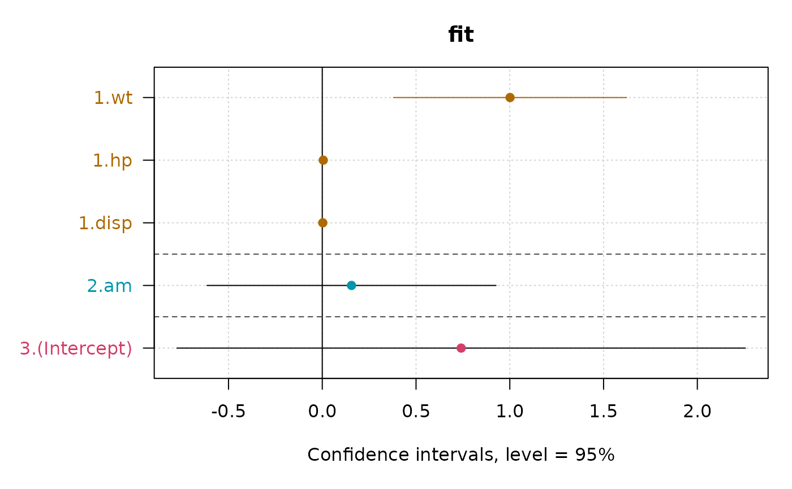
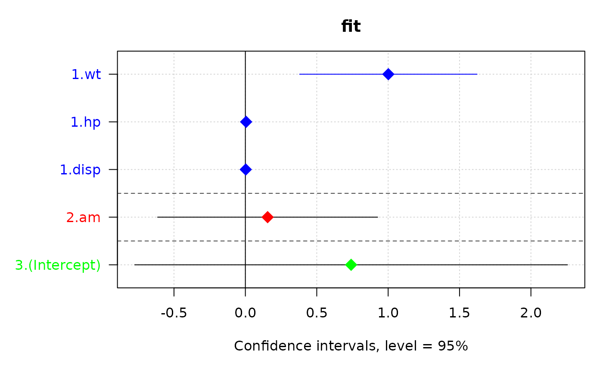
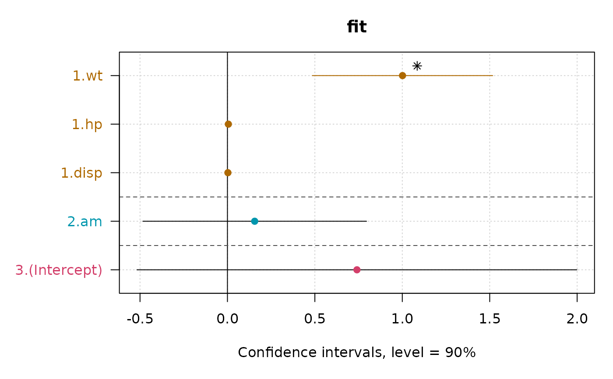

Modified version of the confint function, which displays
the coefficients in addition to the CIs, and allows for more control on
display parameters. A plot argument and function allow to graph the
coefficients and their CIs.
Arguments
- object
A fitted model object.
- parm
A specification of which parameters are to be given confidence intervals, either a vector of numbers or a vector of names. If missing, all parameters are considered.
- level
The confidence level required.
- order
Logical. If
TRUE, the results are ordered by descending order on the coefficient value.- groups
A
factorin the sense thatas.factor(f)defines the groups, or a list of such factors in which case their interaction is used for the groups. Seesplit.- plot
Whether to plot the results.
- ...
Further arguments passed to
points.- x
A
data.frameof classconfint.- mar
The number of lines of margin, can be useful if the coefficient names do not fit in the left margin. See
parfor more details.- col
The color of each coefficient + CI; gray by default. If
"groups", the color of each (sorted) group; use a hcl palette by default.- main
The title of the plot.
- pch
The symbol to be used for the points. See
parfor more details.- add.signif
Logical, whether to add an asterik for variables with CIs non-overlapping with zero.
Examples
## Example of linear model
fit <- lm(100/mpg ~ disp + hp + wt + am, data = mtcars)
## Standard 'confint' function
stats::confint(fit)
#> 2.5 % 97.5 %
#> (Intercept) -0.774822875 2.256118188
#> disp -0.002867999 0.008273849
#> hp -0.001400580 0.011949674
#> wt 0.380088737 1.622517536
#> am -0.614677730 0.926307310
## Same results with modified function
confint(fit)
#> 2.5 % 97.5 % coef
#> (Intercept) -0.774822875 2.256118188 0.740647656
#> disp -0.002867999 0.008273849 0.002702925
#> hp -0.001400580 0.011949674 0.005274547
#> wt 0.380088737 1.622517536 1.001303136
#> am -0.614677730 0.926307310 0.155814790
## Argument 'level'
stats::confint(fit, level = .9)
#> 5 % 95 %
#> (Intercept) -0.5173916532 1.998686966
#> disp -0.0019216725 0.007327523
#> hp -0.0002666842 0.010815778
#> wt 0.4856137068 1.516992566
#> am -0.4837950591 0.795424639
confint(fit, level = .9)
#> 5 % 95 % coef
#> (Intercept) -0.5173916532 1.998686966 0.740647656
#> disp -0.0019216725 0.007327523 0.002702925
#> hp -0.0002666842 0.010815778 0.005274547
#> wt 0.4856137068 1.516992566 1.001303136
#> am -0.4837950591 0.795424639 0.155814790
## Argument 'order'
confint(fit, order = TRUE)
#> 2.5 % 97.5 % coef
#> wt 0.380088737 1.622517536 1.001303136
#> (Intercept) -0.774822875 2.256118188 0.740647656
#> am -0.614677730 0.926307310 0.155814790
#> hp -0.001400580 0.011949674 0.005274547
#> disp -0.002867999 0.008273849 0.002702925
## Argument 'groups'
confint(fit, groups = c(3, 1, 1, 1, 2))
#> 2.5 % 97.5 % coef
#> 1.disp -0.002867999 0.008273849 0.002702925
#> 1.hp -0.001400580 0.011949674 0.005274547
#> 1.wt 0.380088737 1.622517536 1.001303136
#> 2.am -0.614677730 0.926307310 0.155814790
#> 3.(Intercept) -0.774822875 2.256118188 0.740647656
## Argument 'level', "'order' and 'groups' simultaneously
confint(fit, level = .9, order = TRUE, groups = c(3, 1, 1, 1, 2))
#> 5 % 95 % coef
#> 1.wt 0.4856137068 1.516992566 1.001303136
#> 1.hp -0.0002666842 0.010815778 0.005274547
#> 1.disp -0.0019216725 0.007327523 0.002702925
#> 2.am -0.4837950591 0.795424639 0.155814790
#> 3.(Intercept) -0.5173916532 1.998686966 0.740647656
## Argument 'parm'
stats::confint(fit, "am")
#> 2.5 % 97.5 %
#> am -0.6146777 0.9263073
confint(fit, "am")
#> 2.5 % 97.5 % coef
#> am -0.6146777 0.9263073 0.1558148
##'
## Plot of the results
plot(confint(fit, order = TRUE, groups = c(3, 1, 1, 1, 2)))

confint(fit, order = TRUE, groups = c(3, 1, 1, 1, 2), plot = TRUE)
#> 2.5 % 97.5 % coef
#> 1.wt 0.380088737 1.622517536 1.001303136
#> 1.hp -0.001400580 0.011949674 0.005274547
#> 1.disp -0.002867999 0.008273849 0.002702925
#> 2.am -0.614677730 0.926307310 0.155814790
#> 3.(Intercept) -0.774822875 2.256118188 0.740647656
confint(fit, order = TRUE, groups = c(3, 1, 1, 1, 2), plot = TRUE,
col = c("blue", "red", "green"), pch = 18, cex = 2)

#> 2.5 % 97.5 % coef
#> 1.wt 0.380088737 1.622517536 1.001303136
#> 1.hp -0.001400580 0.011949674 0.005274547
#> 1.disp -0.002867999 0.008273849 0.002702925
#> 2.am -0.614677730 0.926307310 0.155814790
#> 3.(Intercept) -0.774822875 2.256118188 0.740647656
confint(fit, order = TRUE, groups = c(3, 1, 1, 1, 2), level = 0.9,
plot = TRUE, add.signif = TRUE)

#> 5 % 95 % coef
#> 1.wt 0.4856137068 1.516992566 1.001303136
#> 1.hp -0.0002666842 0.010815778 0.005274547
#> 1.disp -0.0019216725 0.007327523 0.002702925
#> 2.am -0.4837950591 0.795424639 0.155814790
#> 3.(Intercept) -0.5173916532 1.998686966 0.740647656